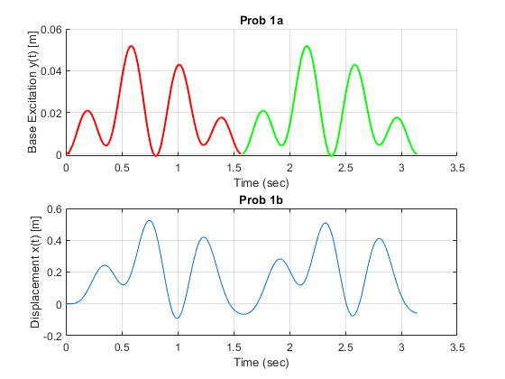
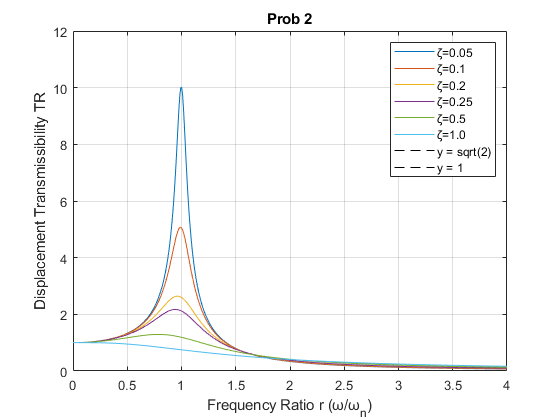

Contents
clear; clc; close all
y = [0.0; 0.00571634384576599; 0.0172961399245937; 0.0215661733228299; 0.0138433053175935;
0.00475824598689792; 0.00940235333989425; 0.0298244388227628; 0.0502561943723699;
0.0516260538077677; 0.0311672997795811; 0.00657207675777726; -0.00043850430233673;
0.0150661812622991; 0.0369781637016863; 0.0444861334353839; 0.032063551445643;
0.0130695841363085; 0.00450012342523607; 0.00980150594910536; 0.0175350556867159;
0.0158705130787799; 0.00603906690334467; 0.0];
m = 1;
k = 100;
zeta = 0.15;
omega_n = sqrt(k/m);
c = 2 * m * omega_n * zeta;
T = pi/2;
N = length(y);
num_harmonics = 4;
a0 = 2 * sum(y) / N;
a = zeros(num_harmonics, 1);
b = zeros(num_harmonics, 1);
t = linspace(0, T, N);
for n = 1:num_harmonics
a(n) = 2 * sum(y .* cos(2 * pi * n * t' / T)) / N;
b(n) = 2 * sum(y .* sin(2 * pi * n * t' / T)) / N;
end
t_extended = linspace(0, 2*T, 10*2*N - 1);
y_recreated = a0/2 * ones(size(t_extended));
for n = 1:num_harmonics
y_recreated = y_recreated + a(n) * cos(2 * pi * n * t_extended / T) ...
+ b(n) * sin(2 * pi * n * t_extended / T);
end
t_span = [0 2*T];
x0 = [0; 0];
[t, x] = ode45(@(t,x) eom(t, x, m, c, k, y_recreated, t_extended, T), t_span, x0);
x =(0.032)*x*10^4;
figure(1);
subplot(2,1,1)
hold on
plot(t_extended(1:end/2), y_recreated(1:end/2), 'r-', 'LineWidth', 1.5);
plot(t_extended(end/2+1:end), y_recreated(end/2+1:end), 'g-', 'LineWidth', 1.5);
xlabel('Time (sec)');
ylabel('Base Excitation y(t) [m]');
title('Prob 1a')
grid on
hold off
subplot(2,1,2)
plot(t, x(:,1));
xlabel('Time (sec)');
ylabel('Displacement x(t) [m]');
title('Prob 1b');
grid on;
Warning: Integer operands are required for colon operator when used as
index.
Warning: Integer operands are required for colon operator when used as
index.
Warning: Integer operands are required for colon operator when used as
index.
Warning: Integer operands are required for colon operator when used as
index.

y = 2024;
m = 9;
d = 1
J0 = 367*y - fix(7/4*(y+fix((m+9)/12))) + fix(275*m/9) + d + 1721013.5;
T0 = (J0-2451545)/36525;
thetaG0 = mod(100.4606184 + 36000.77004*T0 + 3.87933E-4*T0^2 - 2.583E-8*T0^3,360);
d =
1
Problem 2
m = 1;
k = 100;
omega_n = sqrt(k/m);
omega = linspace(0, 4*omega_n, 500);
r = omega/omega_n;
zetas = [0.05, 0.1, 0.2, 0.25, 0.5, 1.0];
TR = zeros(500, 6);
for i = 1:length(zetas)
zeta = zetas(i);
TR(:,i) = sqrt((1 + (2.*zeta.*r).^2).^0.5 ./ ((1 - r.^2).^2 + (2.*zeta.*r).^2));
end
figure(2);
for i = 1:length(zetas)
plot(r, TR(:, i));
hold on;
end
y_limits = [05];
line([sqrt(2) sqrt(2)], y_limits, 'Color', 'black', 'LineStyle', '--', 'DisplayName', 'y = sqrt(2)');
line([1 1], y_limits, 'Color', 'red', 'LineStyle', '--', 'DisplayName', 'y = 1');
legend('ζ=0.05', 'ζ=0.1', 'ζ=0.2', 'ζ=0.25', 'ζ=0.5', 'ζ=1.0', 'y = sqrt(2)', 'y = 1');
grid on
xlabel('Frequency Ratio r (ω/ω_n)');
ylabel('Displacement Transmissibility TR');
title('Prob 2');
function dxdt = eom(t, x, m, c, k, y_recreated, t_extended, T)
y_t = interp1(t_extended, y_recreated, mod(t, T), 'linear', 'extrap');
dxdt = zeros(2,1);
dxdt(1) = x(2);
dxdt(2) = (1/m) * (-(c * x(2)) - (k * x(1)) + c * y_t);
end
